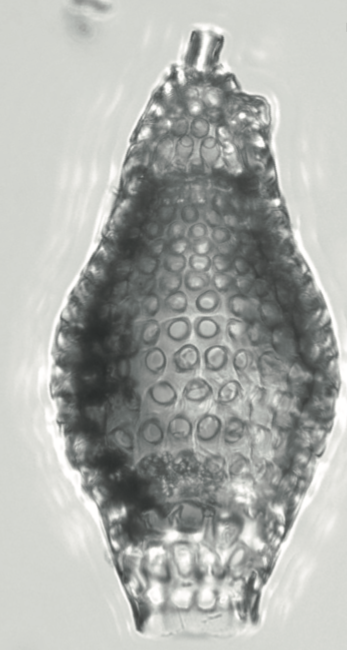

How awesome is that? A radiolarian species was just named after me: Spirocyrtis? renaudiei Meunier & Danelian 2022, an Eocene tropical Artostrobiidae #Radiolaria https://t.co/35H9793X84
— Johan Renaudie (@LeBuveurdeLune) October 12, 2022
Not only did I have the awesome honour to have a species named after me, but it is indeed a plus it kinda looks like mecool species.
Similarly to Spirocyrtis subtilis Petrushevskaya & Kozlova 1972 and S. proboscis O'Connor 1994, it not only has a ventral tube (an apomorphy of Artostrobiidae) but also an apical tube! This is quite a rare feature that raises a lot of questions on how those things develop but also on its usage. Indeed, as was shown in Sugiyama & Anderson 1997, and in a video by Rie Hori at the recent Interrad congress, the living Spirocyrtis scalaris was shown to have a thick axopodium protruding by the ventral tube and that seems to be used by the specimen to "fish". Was the apical tube also used as such?
Also the authors show that S.? renaudiei shares a lot of other characters with species of genus Botryostrobus. As this genus is not known that early in the fossil record, it does open the possibility that this species could be a missing link between the two genera.
Holotype of Spirocyrtis? renaudiei Menuier & Danelian 2022 (Picture from the Manuscript).
Fun fact: the manuscript also names a species after my former boss and mentor David Lazarus (Phormocyrtis lazari Meunier & Danelian 2022) and it is also the first species named after him!
References:
Meunier, M., & Danelian, T. (2022). Progress in understanding middle Eocene nassellarian (Radiolaria, Polycystinea) diversity; new insights from the western equatorial Atlantic Ocean. Journal of Paleontology, 1-25. doi:10.1017/jpa.2022.82
Sugiyama, K., & Anderson, O. R. (1997). Correlated fine structural and light microscopic analyses of living nassellarians Eucyrtidium hexagonatum Haeckel, Pterocorys zancleus (Muller) and Spirocyrtis scalaris Haeckel. News of Osaka Micropaleontologists, Special Volume 10: 311-337.